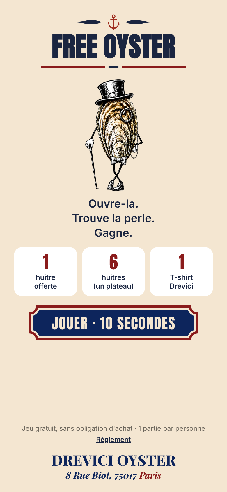
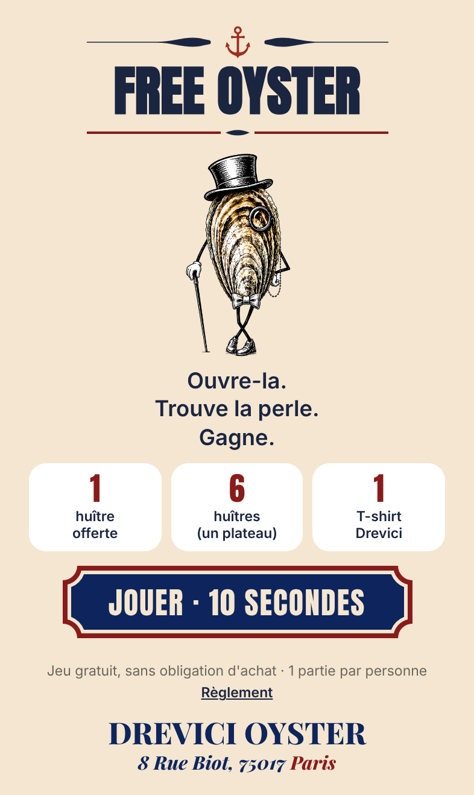
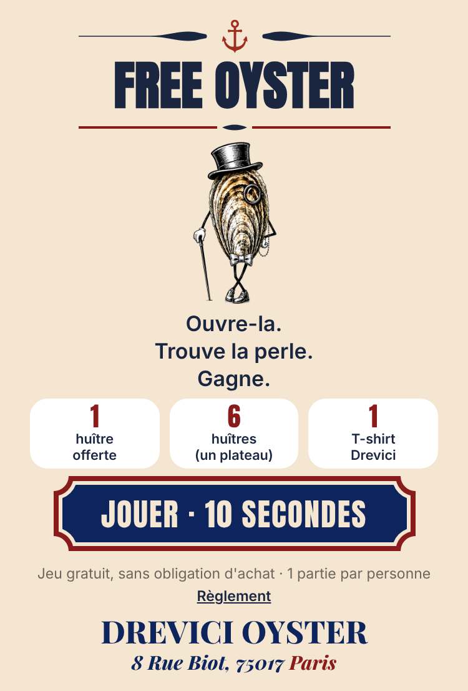

Accueil du jeu · accroche sur 3 lignes · ajustement automatique sur petits écrans

iPhone 15 · appli plein écran · 390×844
Tout tient, taille normale
iPhone 15 · dans Safari · 393×659
Tout tient, réduit à 75 %Android · dans Chrome · 360×660
Tout tient, réduit à 70 %
iPhone SE · dans Safari · 375×553
Tout tient, réduit à 35 %